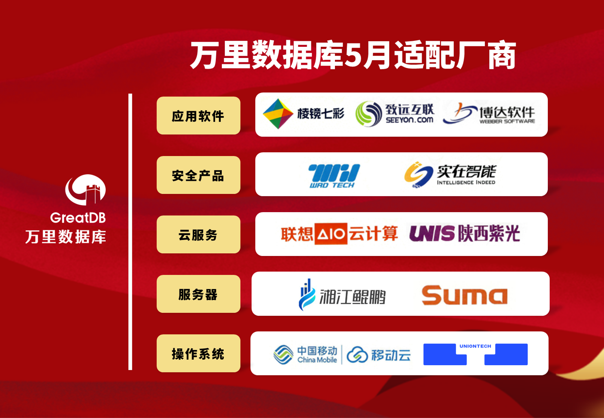

兼容月报丨践行国产化 万里数据库5月完成28款产品适配认证
数字基础设施的建设离不开产业链上下游生态企业的携手共进。万里数据库作为国产数据库领先品牌，自成立以来，积极参与信创产业生态建设，在国产生态兼容适配建设、生态融合等方面持续发力，全面推进从芯片到操作系统、服务器、中间件及各类应用软件的全方位兼容适配工作，共筑国产生态圈。
基于此背景，万里数据库未来将持续发布生态适配月报，诚邀广大产业链伙伴，共同见证基于万里安全数据库GreatDB的生态建设成果。
2024年5月，万里数据库与中国移动、联想云计算、统信软件、棱镜七彩、中科可控、湘江鲲鹏、致远互联、陕西紫光等11家生态伙伴完成共28款产品兼容适配，充分体现了万里数据库作为领先的国产数据库厂商完善的生态建设与拓展能力。

此次适配产品覆盖应用软件、安全产品、云平台、服务器、操作系统等生态链上下游领域。测试结果表明：万里安全数据库GreatDB与上述多家产品完全兼容，整体运行稳定高效，安全性、可靠性、稳定性良好，可满足用户的关键性应用需求。
值得一提的是，5月兼容认证过程中，万里安全数据库与多家重点的上下游生态伙伴完成兼容测试，尤其云产品适配认证方面表现突出。万里安全数据库GreatDB与中国移动大云企业操作系统BC-Linux 、联想云计算凌云D9000桌面云管理系统、陕西紫光云档案管理平台等多款云产品完成兼容认证，意味万里数据库产品可以在多元的云环境下高效稳定运行，可为金融、通信、能源等关键行业用户提供国产云环境下更安全可靠的的数据库保驾护航服务。
此次万里安全数据库GreatDB完成了众多云产品的适配认证，打通了底层数据库与上层云平台的全链条国产化，不仅为国内云计算发展提供坚实的底层数据库支撑，也为国内信息技术生态建设打下坚实基础。
作为国产数据库的领导者、信创产业链核心企业，万里数据库一直以来非常重视产业生态建设，积极建设协同发展、互利共赢的国产生态体系。目前，万里数据库已与上下游重点厂商开展了深度的技术合作认证，累计完成超500项产品适配认证。
未来，万里数据库将继续发挥数据库在生态体系中的连接作用，夯实信创产业发展底座，共建国产创新生态圈，携手产业链生态伙伴积极探索各行业创新应用实践，打造更加安全可靠的数字基础设施。